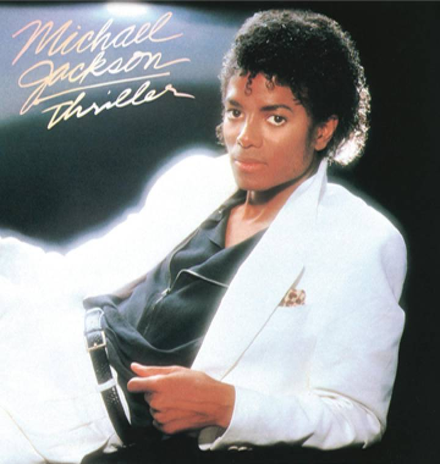
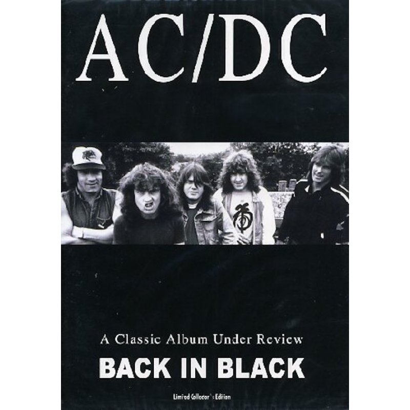
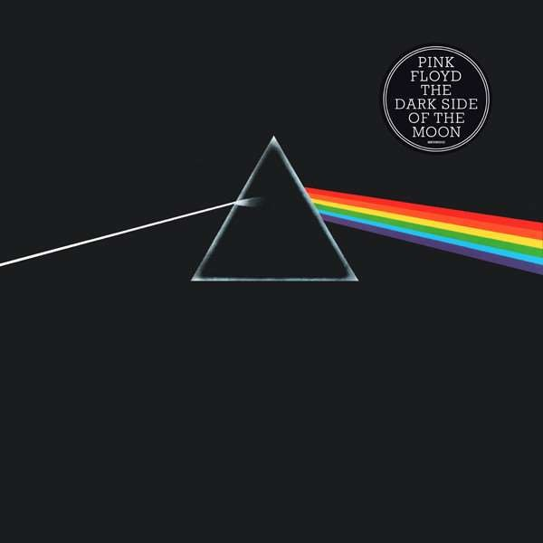
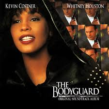
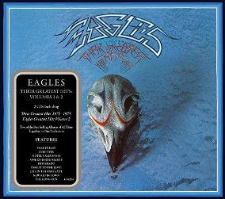
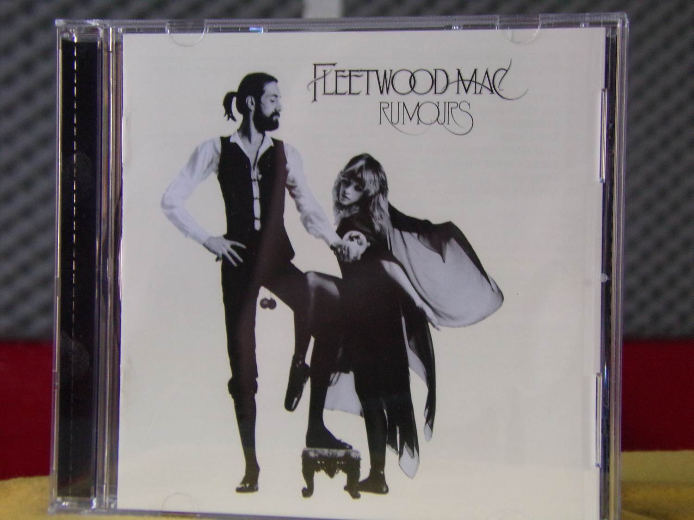
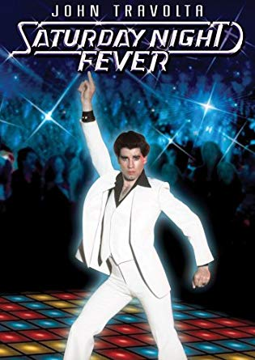
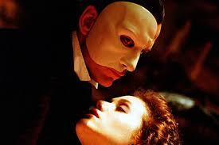
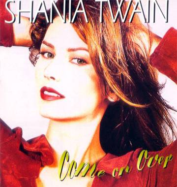
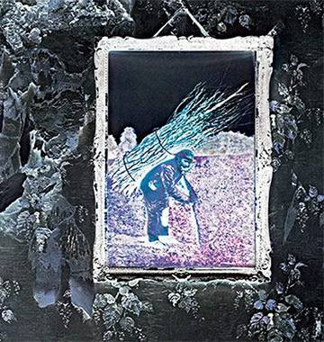

Artista: Michael Jackson
Sello: Epic Records (1982)
Descripción: Micheal Jackson se coronó definitivamente
como el rey del pop con este álbum. Canciones como "Thriller", "Billy Jean" o "Beat It" son grandes éxitos de hoy.

Artista: ACDC
Sello: Albert Productions y Atlantic Records (1980)
Descripción: Las diez canciones de este disco son una especie de mandamiento del hard-rock.
Fue el primer álbum tras la muerte de Bon Scott.
Artista: Pink Floyd
Sello: Harvest Records y Capitol Records (1973)
Descripción: El impacto de este álbum se resume en una cifra: permaneció en las lista de éxitos más de 17 años. Pese a la salida de Syd Barret en 1968, la banda siguió su camino.
Artista: Whitney Houston y varios artistas.
Sello: Arista Records (1992)
Descripción: Es la banda sonora más vendida de todos los tiempos, con 19 discos de platino. "I Will Always Love You" es una de las grandes canciones románticas de todos los tiempos.
Artista: The Eagles
Sello: Asylum Records (1976)
Descripción: Pese a ser un álbum recopilatorio, este trabajo de The Eagles tuvo una enorme distribución. Diez canciones que recogen los 'hits' de la banda de rock.
Artista: Fletwood Mac
Sello: Big Brother Recordings y Epic Records (1977)
Descripción: Los rumores de ruptura no impidieron a Fletwood Mac sacar su disco más famoso. Encontramos sencillos como "Go Your Own Way" o "Don't Stop".
Artista: Bee Gees y varios artistas
Sello: RSO, Polydor y Reprise Records (1977)
Descripción: El hecho de que el álbum fuera añadido a la Biblioteca del Congreso de los Estados Unidos demuestra el impacto cultura que tuvieron la película y su banda sonora.
Artista: Andrew Lloyd Webber
Sello: Sony Music (2004)
Descripción: La musicalización de esta obra en la que el protagonista habita debajo de la opera de París por parte de Andrew Lloyd Webber ha gozado de un enorme éxito.
Artista: Shania Twain
Sello: Universal Music (1997)
Descripción: Es el álbum más vendido de los noventa y de toda la historia del country. Las canciones fueron escritas y producidas por Shania Twain y su marido en la época, Robert Lange.
Artista: Led Zeppelin
Sello: Atlantic Records (1971)
Descripción: Aunque no tiene título definido, se le puso este nombre por el lugar que ocupa en la cronología de los discos de la banda. Fue producido por Jimmy Page, guitarrista del grupo.